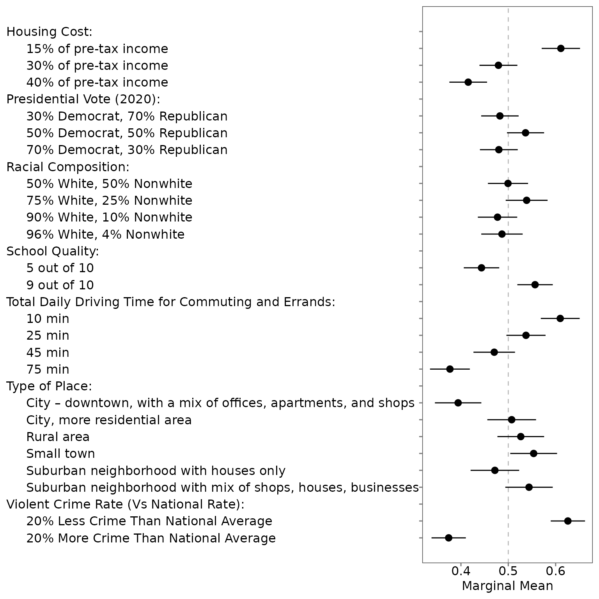

Introduction to projoint
projoint.RmdProjoint is a complete pipeline for conjoint survey design,
implementation, analysis, and visualization. This R library conducts the
data wrangling, measurement error correction, and statistical analysis
components. Most users will only encounter two main functions –
reshape_projoint() and projoint() – while more
advanced users will have a high degree of control over the mechanics of
their estimation.
The projoint() function takes a number of inputs: 1. an
argument specifying the data 2. an argument set specifying the
measurement error correction method 3. an argument indicating the
standard error estimation method 4. optional arguments specifying the
structure of the analysis and quantities of interest
As well, there are arguments allowing users to step through these analysis decisions more slowly. We include a function to read the results of a conjoint survey from a Qualtrics csv, a function to estimate measurement error, functions to restructure conjoint data according to specific quantities of interest, and several visualization functions to produce publication-ready plots.
To start, let’s use read_Qualtrics() to load in a data
set. We’ll use an example data set that replicates a study by Mummolo and Nall (2017)
examining residential segregation in the United States. We replicate
this study exactly, except for adding in an extra question we can use to
estimate measurement error.
When you download a file from Qualtrics, please make sure to “use choice text” (for more instructions by Qualtrics, see Data Export Options). Please note that the original Qualtrics file has three rows to describe variables. Thus, it should look like the following:

The read_Qualtrics() function uses the first row as the
column names and skip the second and third rows.
library(projoint)
dat <- read_Qualtrics("data/mummolo_nall_replication.csv")After reading the Qualtrics data into R, you perhaps need to add a few more lines to clean your data – e.g., removing incomplete responses, filtering out respondents who failed to pass the attention check questions, some responses that Qualtrics flagged as possible bots, etc. Then, your data frame (more specifically, tibble) should look like the following. Each row corresponds to each respondent.
## # A tibble: 398 × 185
## ResponseId choice1_repeated_fli…¹ choice1 choice2 choice3 choice4 choice5
## <chr> <chr> <chr> <chr> <chr> <chr> <chr>
## 1 R_yjYj0jtOY98… Community B Commun… Commun… Commun… Commun… Commun…
## 2 R_1dKd05O6FTO… Community B Commun… Commun… Commun… Commun… Commun…
## 3 R_1otDp642wWY… Community A Commun… Commun… Commun… Commun… Commun…
## 4 R_2BnD3fuJMRK… Community A Commun… Commun… Commun… Commun… Commun…
## 5 R_1cZo7yXoxo7… Community A Commun… Commun… Commun… Commun… Commun…
## 6 R_2zo0OJ1CnBF… Community B Commun… Commun… Commun… Commun… Commun…
## 7 R_9Zglxj22RFH… Community A Commun… Commun… Commun… Commun… Commun…
## 8 R_NUBwH4ZBNCS… Community B Commun… Commun… Commun… Commun… Commun…
## 9 R_1KiHr7ZV4cI… Community B Commun… Commun… Commun… Commun… Commun…
## 10 R_2b2vVVm1bwn… Community A Commun… Commun… Commun… Commun… Commun…
## # ℹ 388 more rows
## # ℹ abbreviated name: ¹choice1_repeated_flipped
## # ℹ 178 more variables: choice6 <chr>, choice7 <chr>, choice8 <chr>,
## # race <chr>, party_1 <chr>, party_2 <chr>, party_3 <chr>, party_4 <chr>,
## # ideology <chr>, honesty <chr>, `K-1-1` <chr>, `K-1-1-1` <chr>,
## # `K-1-2` <chr>, `K-1-1-2` <chr>, `K-1-3` <chr>, `K-1-1-3` <chr>,
## # `K-1-4` <chr>, `K-1-1-4` <chr>, `K-1-5` <chr>, `K-1-1-5` <chr>, …Next, we will use reshape_projoint() to prepare the data
set for the main function. This involves stripping unnecessary columns,
indicating which column (if any) is a repeated task, and specifying the
respondent identifier.
reshaped_data <- reshape_projoint(
.dataframe = dat,
.outcomes = c(paste0("choice", 1:8), "choice1_repeated_flipped"),
.outcomes_ids = c("A", "B"),
.alphabet = "K",
.idvar = "ResponseId",
.repeated = TRUE,
.flipped = TRUE)Let’s walk through the arguments we have specified.
.dataframe is a data frame, ideally read in from Qualtrics
using read_Qualtrics() but not necessarily. The
.idvar argument, a character, indicates that in
exampleData1, the column ResponseId indicates
unique survey respondents. The .outcomes variable lists all
the columns that are outcomes; the last element in this vector is the
repeated task (if it was conducted). .outcomes_ids
indicates the possible options for an outcome; specifically, it is a
vector of characters with two elements, which are the last characters of
the names of the first and second profiles. For example, it should be
c(“A”, “B”) if the profile names are “Candidate A” and “Candidate B”.
This character vector can be anything, such as c(“1”, “2”), c(“a”, “b”),
etc. If you have multiple tasks in your design, you should use the
same profile names across all these tasks. .alphabet
defaults to “K” if the conjoint survey was conducted using either our
tool or Strezhnev’s Conjoint Survey Design
Tool. The final two arguments, .repeated and
.flipped, again relate to the repeated task. If the
.repeated is set to TRUE, then the last
element of the .outcomes vector is taken to be a repetition
of the first task; .flipped indicates whether the profiles
are in the reversed order.
We can pass this data set directly into projoint() as
follows:
output <- projoint(reshaped_data)To see the key components of the estimate, use
print():
print(output)## [A projoint output]
## Estimand: mm
## Structure: profile_level
## IRR: Estimated
## Tau: 0.1713053
## Remove ties: TRUE
## SE methods: analyticalTo see the summary of the estimated results, use
summary():
summary(output)## # A tibble: 48 × 6
## estimand estimate se conf.low conf.high att_level_choose
## <chr> <dbl> <dbl> <dbl> <dbl> <chr>
## 1 mm_uncorrected 0.573 0.0135 0.547 0.599 att1:level1
## 2 mm_corrected 0.611 0.0206 0.571 0.652 att1:level1
## 3 mm_uncorrected 0.486 0.0134 0.460 0.513 att1:level2
## 4 mm_corrected 0.479 0.0204 0.439 0.519 att1:level2
## 5 mm_uncorrected 0.444 0.0131 0.419 0.470 att1:level3
## 6 mm_corrected 0.415 0.0203 0.376 0.455 att1:level3
## 7 mm_uncorrected 0.488 0.0133 0.462 0.514 att2:level1
## 8 mm_corrected 0.482 0.0202 0.443 0.522 att2:level1
## 9 mm_uncorrected 0.524 0.0131 0.498 0.550 att2:level2
## 10 mm_corrected 0.536 0.0200 0.497 0.576 att2:level2
## # ℹ 38 more rowsThe summary() returns a tibble (the tidyverse version of
data frame). So researchers can save and use it to make tables and
figures. For those who want to skip this manual step and plot the
estimates, use plot(), but please note that the current
version only shows the figure for profile-level MMs or AMCEs.
plot(output)